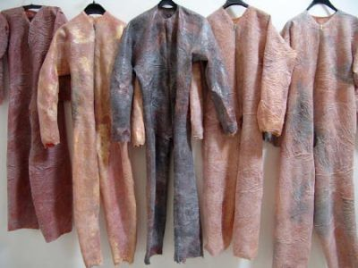

I know that, among fans of AS, the character is rabidly loved, but I truly wonder just how popular the character is across the entire HL fan base…
Personally, I preferred the level design in opposing force. I also enjoyed fighting Xen aliens, Black Ops and Race X alongside other marines. However, the protagonist had little to do with anything, just being a couple of hands in front of the screen for the most part.
If I were to choose one of the protagonists though, I would still choose Freeman. Adrian was a generic gas masked grunt. Freeman slaughtered countless Adrian Shepherds.
How many Gordon Freemans did Shepherd kill? Eh?
Although I see what you’re saying, how many Adrian Shepherds did Gordon kill?
[QUOTE=
How many Gordon Freemans did Shepherd kill? Eh?[/QUOTE]
ShephArd…there fix’d it
I can’t recall one single moment in OP4 where you actually kill Freeman. /sarcasm
Sorry, there’s so many Shephard and Shepherd spellings that I get confused. But yeah, I think its with an ‘a’. And I also think that the reason lots of Half-Life fans are so interested in his return is because he’s the only one from the Black Mesa Incident who we haven’t had any word on. (Except Cross and Greene, but I don’t see too many people caring about them much). But I think that if they reinclude him in the Half-Life Universe, it should be his own game. Otherwise, it would take away from the personality that the player gives him. I think that’s part of what makes him so popular. I know that I approach all the games in the anthology differently, depending on the character. Maybe I’m just weird. (duh)
I can see Shepherd being brought back, although not out of any particular love for the character, and not as a protagonist.
Gordon’s been freed from the G-Man’s influence by the Vortigaunts, so it looks like the G-Man has lost his primary agent on this world. I don’t see him as having the power to directly alter things, he can merely influence others, sometimes subtlety, sometimes in a more manual, mind-control-like way as he did with Alyx. It makes sense that he’d now be using his other assets to strengthen his position, which will probably bring him into conflict with Gordon and the Vorts.
I can see him using Shephard as a human agent whose function is to appear at the worst possible times and mess up Gordon’s plans as much as possible, and who Gordon has to kill at some point. It’d be a nice call back to Half Life having to fight a HECU soldier, and offer an interesting parallel considering Gordon was also once one of the G-Man’s agents, although I admit it might seem a bit random to people who haven’t played Opposing Force. This is the only way I can see Shepherd returning, since he’s currently under G-Man’s control, and as it doesn’t look like the G-Man will be having much of a positive role beyond this point, I don’t see how Shepherd could emerge a protagonist from that.
If HL was a Kojima production, Shephard would be a cyborg by this point in time and we would be controlling Alyx and Freeman’s son, Bob, as he goes undercover into the Combine homeworld to rescue Eli’s brain, which was transferred into a Mobile Nuclear Platform called Steel Rod.
I like where this is going 
Remember the gman also has shepard still in stasis he just used gordon first i think adrian will most definetely make a comeback
Do people even read the Fucking Dates before Posting?
This is Three Weeks old, kid.
Leave it alone.
Three weeks is nothing like microwave cassorole’s 2 year necro of that thread about Gordon’s middle name.
He’s Four Posts in, and already I want to wear his castrated fucking remains.
He’s off to a wonderful start here,
they currently have them on sale at k-mart

Hopefully he’ll die with this thread
given his location, he should be already dead.
Unless something else got to him First,